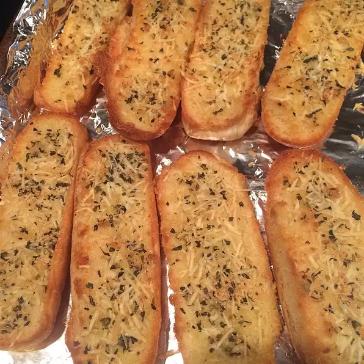

Begin with hot dog buns to make this a quick addition to your weekday Italian dinners.
Preheat an oven to 400 degrees F (200 degrees C). Stir together the Parmesan cheese, garlic powder, and basil in a small bowl; set aside.
Stir together the Parmesan cheese, garlic powder, and basil in a small bowl; set aside. Spread the cut sides of the hot dog buns with margarine. Sprinkle with the Parmesan cheese mixture and place, margarine-side-up, onto a baking sheet.
Bake in the preheated oven until golden brown, about 10 minutes.
81 calories; protein 5.3g; carbohydrates 22g; fat 7.9g; cholesterol 2.2mg; sodium 306.5mg.